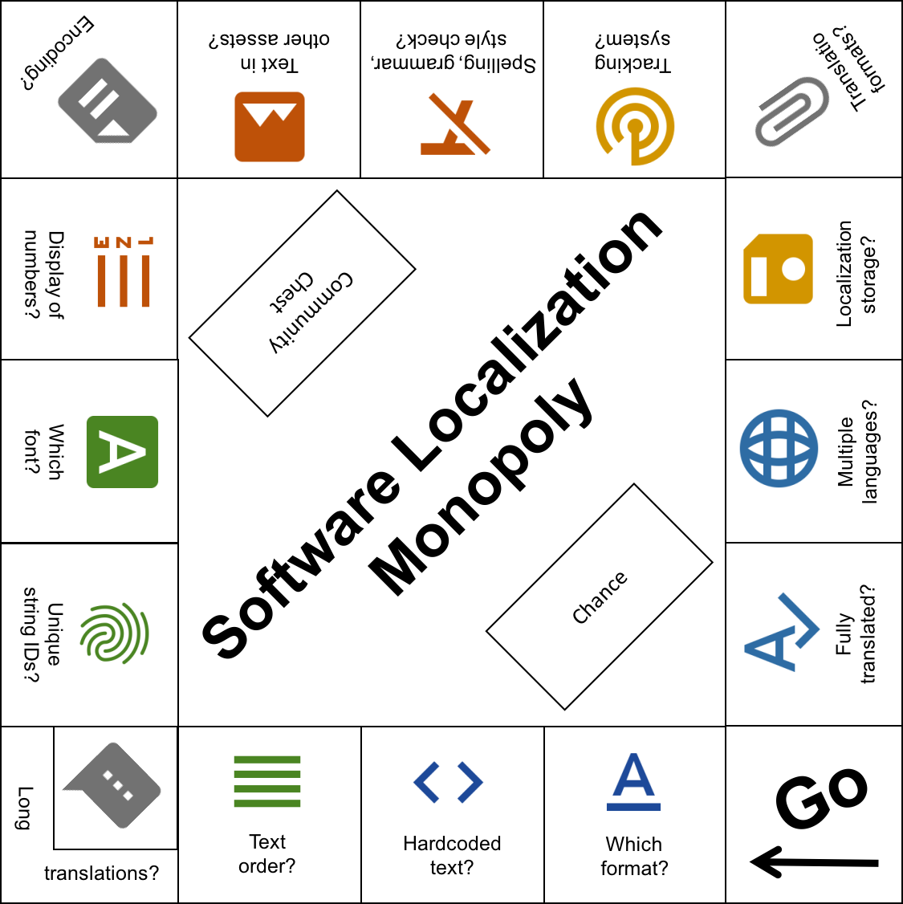
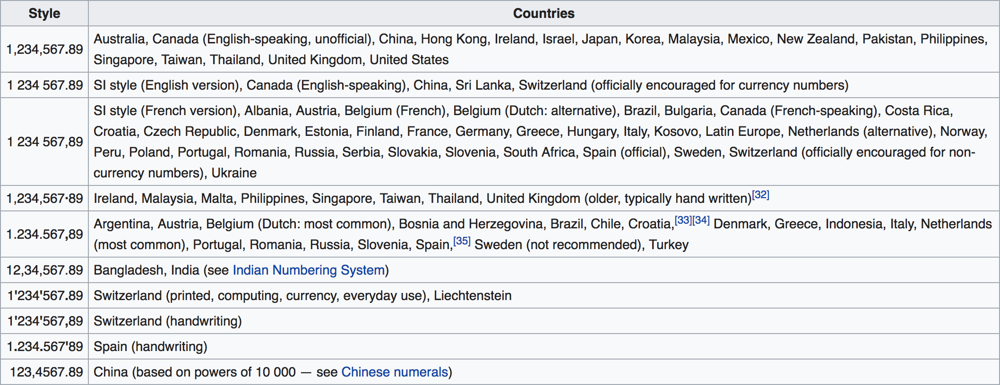

Sie möchten also, dass Menschen auf der ganzen Welt Ihre Software verwenden und verstehen...
...aber wie erreicht man das?
Welches Format soll ich verwenden?
Denken Sie an den Arbeitsablauf, Zeichenfolgen der Software zu exportieren, sie übersetzen zu lassen und sie dann wieder in Ihre Software zu importieren. Dadurch erhalten Sie viele Ideen, wie Sie Ihre Texte strukturieren können.
Manchmal gibt die verwendete Bibliothek bereits ein Format vor.
Bei Webprojekten kann dies beispielsweise sein:
Für Mobile-Projekte kann dies beispielsweise sein:
- Localizable.strings (bspw. benutzt von iOS)
- XML String Resource (bspw. benutzt von Android)
- ...
Für System-Apps kann dies beispielsweise sein:
- Java properties Dateien (bspw. benutzt von Java)
- ResX Dateien (bspw. benutzt von .Net)
- ...
Codieren Sie Textzeichenfolgen im Quellcode fest?
Ressourcendateien sollten den gesamten in der Software verwendeten Text speichern; Lassen Sie Textzeichenfolgen nicht fest codiert!
Bitte nicht!
Kann die Reihenfolge der Variablen in lokalisierten Zeichenfolgen geändert werden?
Implementieren Sie ein Token-System, um sicherzustellen, dass Substantive, Verben usw. in einer eindeutigen Reihenfolge nach Sprache platziert werden können. Verschiedene Sprachen müssen mehr Informationen über den Kontext kennen. Zum Beispiel für Pluralisierung oder Geschlecht. Die italienische Sprache zum Beispiel stützt sich auf das Geschlecht. Die Wörter im Satz ändern sich je nachdem, ob es sich um einen Mann oder eine Frau handelt. Polnisch beispielsweise, hat einen Singular und dann einen anderen Plural, je nachdem, ob die Anzahl der Dinge mit 2, 3 und 4 oder einer anderen Ziffer endet. Und Rumänisch braucht einen anderen Plural für jede Gruppe von Objekten, die grösser als 20 sind.
Erlaubt die Schnittstelle lange Übersetzungen?
Was ist mit langen Übersetzungen in Bereichen mit einzeiligem Text? Gibt es Bereiche mit mehrzeiligem Text in Ihrer Software? Sätze, die im Englischen fünf Silben umfassen, erfordern in einer anderen Sprache tatsächlich eine ganze Beschreibung mit zwei Absätzen.
Verwenden Sie eindeutige String-IDs?
Eindeutige String-IDs helfen dabei, Entwicklungs-, Übersetzungs- und QA-Teams auf dem gleichen Stand zu halten. Ein weiterer Grund dafür ist: wenn Sie zum Beispiel einen Text in Englisch haben, der an 2 verschiedenen Stellen auf Ihrer UI sichtbar ist, aber möglicherweise in anderen Sprachen anders übersetzt wird (weil es besser passt).
Was ist mit Schriftarten? Wer wählt ihre Typen und Grössen in der Software aus?
Sowohl Lokalisierungs- als auch Entwicklungsteams sollten Schriftarten als gemeinsame Anstrengung auswählen. Und wie entscheiden Sie über den Anteil der Schriftarten? Während Schriftarten für nordamerikanische und europäische Sprachen "Proportional" sein sollten, ist "Monospace" der richtige Typ für asiatische Sprachen. Sind die Schriftarten mit Sonderzeichen für alle Sprachen kompatibel? Unterschiedliche Sprachen, unterschiedliche Bedürfnisse: für Sonderzeichen, Wortreihenfolge, gerade Zahlen.
Wie werden Datum, Uhrzeit, Währung und Zahlen angezeigt?
Lassen Sie Datum, Uhrzeit, Währung und Zahlen mit unterschiedlichen Zahlen und Zahlentrennzeichen nach Sprache oder sogar Region anzeigen.
Stellen Sie sicher, dass das Datumsformat richtig ist, weil Amerikaner Monat/Tag/Jahr britische Menschen Tag/Monat/Jahr machen und übrigens in Amerika die Woche an einem Sonntag beginnt und in Grossbritannien die Woche am Montag beginnt. Europa will 24-Stunden-Uhren und Amerika will 12-Stunden-Uhren.
Apropos Zahlen, hier eine kleine Liste:

Quelle
Welche Kodierung verwenden Sie für Ihre Text-Assets?
Wählen Sie eine Kodierung, welche alle Zielsprachen unterstützt. Wenn Sie es nicht wissen, wählen Sie einfach UTF-8. Wenn Sie wissen möchten, Warum UTF-8 die beste Codierung ist?, lesen Sie diesen Artikel. Übrigens, um Assets, welche für ein bestimmtes Gebietsschema bestimmt sind, voneinander zu unterscheiden, verwenden Sie ISO 693-1 & 3166-1 Sprach- und Ländercodes, um Assets nach Gebietsschema zu kennzeichnen.
Haben die Grafiken Ihrer Software-Benutzeroberfläche Text?
Seien Sie bereit, Kunstelemente auszutauschen, wenn sie lesbaren Text enthalten. Auch wenn kein lesbarer Text vorhanden ist, möchten Sie das Kunstobjekt (z. B. ein Bild) manchmal aus kulturellen Gründen anpassen. Es gibt einige Bibliotheken, die bei diesem Problem helfen können, z. B. Fragmentersetzung für Links und Bilder
Haben Sie den Originaltext einer Rechtschreib-, Grammatik- und Stilprüfung unterzogen?
Verhindern Sie wiederholte Überprüfungen, die den gesamten Prozess blockieren könnten. Als Alternative sollten Sie darüber nachdenken, eine Art kontinuierliche Lokalisierung zu erstellen. Mit der kontinuierliche Lokalisierung können Sie sich vom ersten Tag an um die Übersetzungen kümmern und problemlos mit Änderungen Schritt halten. Übersetzungs- und Entwicklungsprozess sind getrennt.
Verwenden Sie ein Tracking-System?
Das Nachverfolgen jeder Änderung an lokalisierbaren Inhalten kann wichtig sein, um sicherzustellen, dass bei der Verteilung Ihrer Software keine Inhalte zurückgelassen werden. Für bestimmte Projekte oder Branchen ist es aus Revisionsgründen wichtig zu wissen, welcher Übersetzer welche Änderung vorgenommen hat. Einige Übersetzungsmanagementsysteme bieten eine dedizierte Verlaufsfunktion. Dies befähigt Sie, jederzeit nachzuweisen, wenn ein Inhaltsfragment geändert wurde.
Welche Dateiformate senden Sie für Übersetzungsarbeiten?
JSON, XML (oder ein abgeleitetes Format, z. B. XLIFF) wird gegenüber reinem Text oder Excel-Dateien bevorzugt. Noch besser sind Lokalisierungsmanagementsysteme, die einen vollständig integrierten Ansatz bieten.
Wo sind die Lokalisierungsressourcen?
Speichern Sie Lokalisierungs-Assets an einem leicht zugänglichen Ort für schnellen Zugriff, Import und Export. Mit einer geeigneten kontinuirlichen Lokalisierungs-Lösung können Übersetzungen aktualisiert werden, ohne dass ein Update Ihrer App veröffentlicht werden muss. Beispiel: Übersetzungen, die in einem CDN bereitgestellt und von Ihrer Anwendung genutzt werden.
Beabsichtigen Sie, die Texte in mehr als eine Sprache übersetzen zu lassen?
Verarbeiten Sie Ressourcendateien in separate Sprachdateien, damit alle Übersetzer parallel arbeiten können. Eine gute Lokalisierungsmanagement-Lösung kann hier wirklich helfen. Alle Teammitglieder können parallel kollaborativ arbeiten. So kommen Sie schneller ans Ziel.
Wie verfolgen Sie, welche Sprache vollständig übersetzt ist?
Um es in einem Satz zu sagen: „Fangen Sie früh genug an, über den Lokalisierungsprozess nachzudenken!“ Der grösste Fehler, den man machen kann, ist die Lokalisierung nicht genügend Wichtigkeit zu schenken, da sie nur darauf basiert, Ihren Code zu instrumentieren und Texte in Ressourcendateien zu extrahieren, damit Sie sie später übersetzen können.
Sie sollten den vollen Überblick darüber behalten, was übersetzt wird und was nicht  –  noch mehr, wenn Sie Übersetzungen bei den Übersetzungsdienstleistern bestellen, sollten Sie auch Ihre offenen Aufträge im Auge behalten.
Was sagen Sie nun? Sind Sie bereit Softwarelokalisierungs-Monopoly zu "spielen"?
Keine Sorge, locize kann Sie dabei unterstützen!
Sehen Sie sich das Demo-Video an, um mehr zu erfahren:
locize beseitigt den Schmerz im Übersetzungsprozess. Keine Verzögerungen mehr beim Publizieren Ihrer Software aufgrund fehlender Übersetzungen. Übersetzer können vom ersten Tag an mit Änderungen Schritt halten. Der kontinuierliche Lokalisierungsprozess hält mit Ihrem anspruchsvollen Geschäft Schritt.